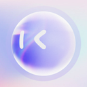

Mobile and remote control tools for web browsing agents
Tools that run or control agents from phones, or let agents operate mobile apps and devices. Of the 205 tools on our browsing the web page, 18 fit this narrower job. By pricing: 11 open source, 3 free or freemium, 2 paid, usage-based or enterprise, 2 pricing on the maker's site. The most-starred open repos here are Orca (110,696 stars), Google ARTEMIS (15,773 stars), CloudCLI (14,347 stars). Most come from the browser/computer use (11), personal agents (3), coding (2) categories.
Updated
Orca
Orca is an MIT-licensed desktop app for running a fleet of coding agents such as Claude Code and Codex in parallel on your own subscriptions, each in its own git worktree, with diffs, a built-in browser and a CLI in one place. You can drive an agent in a chat view or its raw terminal and switch between them without losing context, hand a big task to one agent that splits it across worker agents, and keep agents running on a remote Orca server, any SSH host or a cloud VM after you close your laptop; there are mobile apps too.
Added
Google ARTEMIS
Google's tool that turns natural-language instructions into Android automation.
Added
CloudCLI
A web and mobile interface for Claude Code, Codex and Gemini CLI, so you can run and steer coding sessions from a browser or phone. Self-host free or use the hosted CloudCLI service.
Added
Mobile MCP
MCP server that lets agents automate iOS and Android apps on simulators, emulators and real devices through one platform-agnostic interface.
Added
Mobilerun
LLM-agnostic agent framework for controlling Android and iOS devices with natural language.
Added
LAMDA
LAMDA is an open-source Android full-stack device control platform with WebRTC desktop, UI/OCR automation, Frida, MITM and MCP/agent APIs.
Added
Agent Device
Mobile app automation and verification for coding agents on iOS and Android.
Added

mobile-use
Open-source AI agent that controls real Android and iOS apps from natural-language commands.
Added
Qwen-UI-Agent
Tongyi foundation GUI agent model that operates mobile, computer and browser interfaces, trained and evaluated on real devices.
Added
Skales
Personal AI agent for desktop and mobile that codes, automates the desktop and browser and runs scheduled tasks with local or cloud models.
Added
AgentBay
Alibaba Cloud's cloud sandbox service for agents, offering ready-made browser, Linux and Windows desktop, mobile and code environments that agents control through an SDK or MCP.
Added
AutoCua
AutoCua is an open-source computer use agent that drives real desktop apps with mouse and keyboard on Windows, macOS and Linux, and also works in Chrome, Firefox and other browsers, in a real terminal and on an iPhone, iPad or iOS Simulator. It is built as a multi-agent harness you install with pip, so one agent can carry a task across the desktop, the web, the shell and a phone.
Added
Dodaios
Open-source desktop agent OS for Windows, macOS and Linux (formerly Personal Jarvis): talk to it and it runs your coding CLIs side by side, your browser and your apps, with offline Whisper speech, a local wiki memory and support for Ollama, Claude or ChatGPT subscriptions.
Added
AGI-0 by AGI, Inc.
AGI, Inc.'s small action model and Android agent that sees the screen and acts across any app without APIs.
Added
Novera
Novera is an independent AI assistant from TRON-ABS for Windows, Linux, macOS and Android that runs local text models with a 32k context, plus key-free web search and local FLUX.2 Klein image and ACE-Step music trials, with an experimental WebGPU browser version.
Added
PhoneUse
PhoneUse gives AI agents phones of their own to operate. Agents get cloud Android phones that boot in seconds and scale to hundreds, or real retail iPhones and Androids in a San Francisco rack, tapped by a robot stylus, for apps that detect emulators, with real carrier numbers for SMS and 2FA codes. One MCP server with tools such as acquire, read screen, tap, type, swipe, open app and read SMS plugs into Claude, Cursor, Codex or Windsurf, and there is a Python SDK and REST API. On-demand cloud phones are billed per minute, with flat monthly prices for dedicated and real phones.
Added
Sundae
Sundae is a personal AI assistant you text from iMessage or Android RCS, with no app or account needed. It works on a computer of its own: it books tables, finds flights at current prices, compares shops, reads letters and photos you send, sets reminders, watches prices and builds simple web pages, then texts back with a screenshot so you can check. It remembers what you tell it, asks before spending money, sending, deleting or opening accounts, and stops at checkout for you to pay. It is free to start with a daily limit, with a paid Plus plan, and is in limited beta.
Added
VisorBot
An Android automation app where you type or say a task and VisorBot taps, swipes and types through your apps to do it, with reusable recipes. Free plan; Plus from $4.99 a month.
Added
GitHub repos (13)
| Repo | GitHub stars | Licence | Last push |
|---|---|---|---|
| 110,696 | MIT | 2026-10-30 | |
| 15,773 | Apache License 2.0 | 2026-09-29 | |
| CloudCLI ↗ | 14,347 | — | 2026-10-27 |
| 10,141 | Apache License 2.0 | 2026-10-26 | |
| Mobilerun ↗ | 9,878 | MIT | 2026-10-28 |
| 8,716 | — | — | |
| Agent Device ↗ | 5,196 | MIT | 2026-10-30 |
| mobile-use ↗ | 3,339 | Apache 2.0 | 2026-10-18 |
| Qwen-UI-Agent ↗ | 2,429 | — | 2026-08-19 |
| 2,222 | — | 2026-10-29 | |
| 1,146 | — | 2026-10-28 | |
| 916 | — | 2026-10-28 | |
| 304 | Apache License 2.0 | 2026-10-29 |
13 repos. Stars and licence come from each repo, checked when the listing was last verified.
FAQ
What are the best AI tools for browsing the web focused on mobile and remote control?
We list 18. The first three by GitHub stars and featured status are Orca: Orca is an MIT-licensed desktop app for running a fleet of coding agents such as Claude Code and Codex in parallel on your own subscriptions, each in its own git worktree, with diffs, a built-in browser and a CLI in one place. You can drive an agent in a chat view or its raw terminal and switch between them without losing context, hand a big task to one agent that splits it across worker agents, and keep agents running on a remote Orca server, any SSH host or a cloud VM after you close your laptop; there are mobile apps too.; Google ARTEMIS: Google's tool that turns natural-language instructions into Android automation.; CloudCLI: A web and mobile interface for Claude Code, Codex and Gemini CLI, so you can run and steer coding sessions from a browser or phone. Self-host free or use the hosted CloudCLI service.
Are there free or open-source options?
Yes: 11 open source, 3 free or freemium, 2 paid, usage-based or enterprise, 2 pricing on the maker's site. Pricing is as each maker states it.
More from browsing the web
Tools are grouped by what each says it does. Missing one? Submit it free.